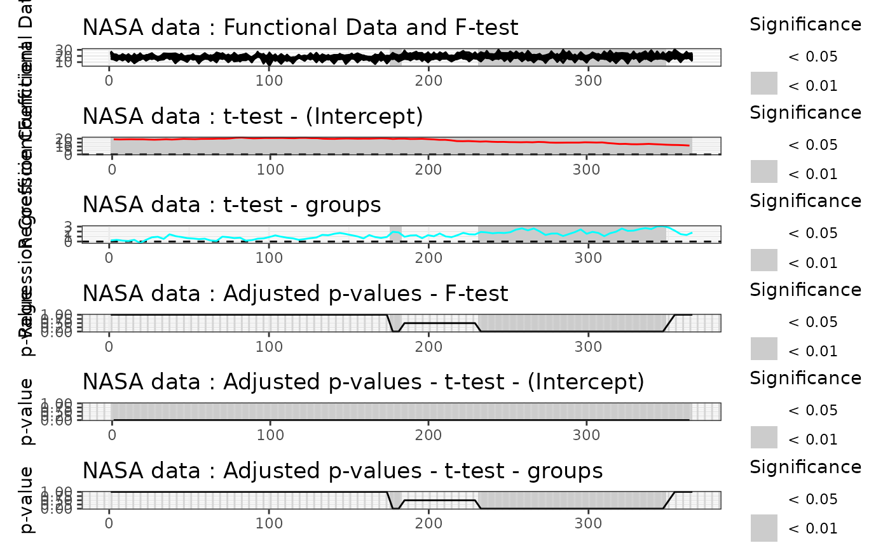

The S3 methods autoplot.fanova() and plot.fanova() are methods
for plotting results of functional analysis of variance tests. They visualize the
functional data and the adjusted p-values obtained from the testing
procedures for mean comparison of multiple groups. The plots highlight significant
effects at two levels of significance, alpha1 and alpha2, using shaded
areas.
Usage
# S3 method for class 'flm'
autoplot(
object,
xrange = c(0, 1),
alpha1 = 0.05,
alpha2 = 0.01,
plot_adjpval = FALSE,
col = c(1, grDevices::rainbow(dim(object$adjusted_pval_part)[1])),
ylim = NULL,
ylabel = "Functional Data",
title = NULL,
linewidth = 1,
type = "l",
...
)
# S3 method for class 'flm'
plot(
x,
xrange = c(0, 1),
alpha1 = 0.05,
alpha2 = 0.01,
plot_adjpval = FALSE,
ylim = NULL,
col = 1,
ylab = "Functional Data",
main = NULL,
lwd = 0.5,
type = "l",
...
)Arguments
- object, x
The object to be plotted. An object of class "
IWTlm", usually, a result of a call toIWTlm.- xrange
A length-2 numeric vector specifying the range of the x-axis for the plots. Defaults to
c(0, 1). This should match the domain of the functional data.- alpha1
A numeric value specifying the first level of significance used to select and display significant effects. Defaults to
alpha1 = 0.05.- alpha2
A numeric value specifying the second level of significance used to select and display significant effects. Defaults to
alpha2 = 0.01.- plot_adjpval
A boolean value specifying whether the plots of adjusted p-values should be displayed. Defaults to
FALSE.- col
An integer specifying the color for the plot of functional data. Defaults to
1L.- ylim
A 2-length numeric vector specifying the range of the y-axis. Defaults to
NULL, which determines automatically the range from functional data.- ylabel, ylab
A string specifying the label of the y-axis of the functional data plot. Defaults to
"Functional Data".- title, main
A string specifying the title of the functional data plot. Defaults to
NULLin which case no title is displayed.- linewidth, lwd
A numeric value specifying the width of the line for the functional data plot. Note that the line width for the adjusted p-value plot will be twice this value. Defaults to
0.5.- type
A string specifying the type of plot for the functional data. Defaults to
"l"for lines.- ...
Other arguments passed to specific methods. Not used in this function.
Value
The autoplot.flm() function creates a ggplot object that
displays the functional data and the adjusted p-values. The significant
intervals at levels alpha1 and alpha2 are highlighted in the plots.
The plot.flm() function is a wrapper around autoplot.flm()
that prints the plot directly.
References
Pini, A., & Vantini, S. (2017). Interval-wise testing for functional data. Journal of Nonparametric Statistics, 29(2), 407-424.
Pini, A., Vantini, S., Colosimo, B. M., & Grasso, M. (2018). Domain‐selective functional analysis of variance for supervised statistical profile monitoring of signal data. Journal of the Royal Statistical Society: Series C (Applied Statistics) 67(1), 55-81.
Abramowicz, K., Hager, C. K., Pini, A., Schelin, L., Sjostedt de Luna, S., & Vantini, S. (2018). Nonparametric inference for functional‐on‐scalar linear models applied to knee kinematic hop data after injury of the anterior cruciate ligament. Scandinavian Journal of Statistics 45(4), 1036-1061.
See also
IWTimage() for the plot of p-values heatmaps (for IWT).
Examples
temperature <- rbind(NASAtemp$milan[, 1:100], NASAtemp$paris[, 1:100])
groups <- c(rep(0, 22), rep(1, 22))
# Performing the IWT
IWT_result <- IWTlm(temperature ~ groups, B = 2L)
#>
#> ── Point-wise tests ────────────────────────────────────────────────────────────
#>
#> ── Interval-wise tests ─────────────────────────────────────────────────────────
#>
#> ── Creating the p-value matrix: end of row 2 out of 100 ────────────────────────
#>
#> ── Creating the p-value matrix: end of row 3 out of 100 ────────────────────────
#>
#> ── Creating the p-value matrix: end of row 4 out of 100 ────────────────────────
#>
#> ── Creating the p-value matrix: end of row 5 out of 100 ────────────────────────
#>
#> ── Creating the p-value matrix: end of row 6 out of 100 ────────────────────────
#>
#> ── Creating the p-value matrix: end of row 7 out of 100 ────────────────────────
#>
#> ── Creating the p-value matrix: end of row 8 out of 100 ────────────────────────
#>
#> ── Creating the p-value matrix: end of row 9 out of 100 ────────────────────────
#>
#> ── Creating the p-value matrix: end of row 10 out of 100 ───────────────────────
#>
#> ── Creating the p-value matrix: end of row 11 out of 100 ───────────────────────
#>
#> ── Creating the p-value matrix: end of row 12 out of 100 ───────────────────────
#>
#> ── Creating the p-value matrix: end of row 13 out of 100 ───────────────────────
#>
#> ── Creating the p-value matrix: end of row 14 out of 100 ───────────────────────
#>
#> ── Creating the p-value matrix: end of row 15 out of 100 ───────────────────────
#>
#> ── Creating the p-value matrix: end of row 16 out of 100 ───────────────────────
#>
#> ── Creating the p-value matrix: end of row 17 out of 100 ───────────────────────
#>
#> ── Creating the p-value matrix: end of row 18 out of 100 ───────────────────────
#>
#> ── Creating the p-value matrix: end of row 19 out of 100 ───────────────────────
#>
#> ── Creating the p-value matrix: end of row 20 out of 100 ───────────────────────
#>
#> ── Creating the p-value matrix: end of row 21 out of 100 ───────────────────────
#>
#> ── Creating the p-value matrix: end of row 22 out of 100 ───────────────────────
#>
#> ── Creating the p-value matrix: end of row 23 out of 100 ───────────────────────
#>
#> ── Creating the p-value matrix: end of row 24 out of 100 ───────────────────────
#>
#> ── Creating the p-value matrix: end of row 25 out of 100 ───────────────────────
#>
#> ── Creating the p-value matrix: end of row 26 out of 100 ───────────────────────
#>
#> ── Creating the p-value matrix: end of row 27 out of 100 ───────────────────────
#>
#> ── Creating the p-value matrix: end of row 28 out of 100 ───────────────────────
#>
#> ── Creating the p-value matrix: end of row 29 out of 100 ───────────────────────
#>
#> ── Creating the p-value matrix: end of row 30 out of 100 ───────────────────────
#>
#> ── Creating the p-value matrix: end of row 31 out of 100 ───────────────────────
#>
#> ── Creating the p-value matrix: end of row 32 out of 100 ───────────────────────
#>
#> ── Creating the p-value matrix: end of row 33 out of 100 ───────────────────────
#>
#> ── Creating the p-value matrix: end of row 34 out of 100 ───────────────────────
#>
#> ── Creating the p-value matrix: end of row 35 out of 100 ───────────────────────
#>
#> ── Creating the p-value matrix: end of row 36 out of 100 ───────────────────────
#>
#> ── Creating the p-value matrix: end of row 37 out of 100 ───────────────────────
#>
#> ── Creating the p-value matrix: end of row 38 out of 100 ───────────────────────
#>
#> ── Creating the p-value matrix: end of row 39 out of 100 ───────────────────────
#>
#> ── Creating the p-value matrix: end of row 40 out of 100 ───────────────────────
#>
#> ── Creating the p-value matrix: end of row 41 out of 100 ───────────────────────
#>
#> ── Creating the p-value matrix: end of row 42 out of 100 ───────────────────────
#>
#> ── Creating the p-value matrix: end of row 43 out of 100 ───────────────────────
#>
#> ── Creating the p-value matrix: end of row 44 out of 100 ───────────────────────
#>
#> ── Creating the p-value matrix: end of row 45 out of 100 ───────────────────────
#>
#> ── Creating the p-value matrix: end of row 46 out of 100 ───────────────────────
#>
#> ── Creating the p-value matrix: end of row 47 out of 100 ───────────────────────
#>
#> ── Creating the p-value matrix: end of row 48 out of 100 ───────────────────────
#>
#> ── Creating the p-value matrix: end of row 49 out of 100 ───────────────────────
#>
#> ── Creating the p-value matrix: end of row 50 out of 100 ───────────────────────
#>
#> ── Creating the p-value matrix: end of row 51 out of 100 ───────────────────────
#>
#> ── Creating the p-value matrix: end of row 52 out of 100 ───────────────────────
#>
#> ── Creating the p-value matrix: end of row 53 out of 100 ───────────────────────
#>
#> ── Creating the p-value matrix: end of row 54 out of 100 ───────────────────────
#>
#> ── Creating the p-value matrix: end of row 55 out of 100 ───────────────────────
#>
#> ── Creating the p-value matrix: end of row 56 out of 100 ───────────────────────
#>
#> ── Creating the p-value matrix: end of row 57 out of 100 ───────────────────────
#>
#> ── Creating the p-value matrix: end of row 58 out of 100 ───────────────────────
#>
#> ── Creating the p-value matrix: end of row 59 out of 100 ───────────────────────
#>
#> ── Creating the p-value matrix: end of row 60 out of 100 ───────────────────────
#>
#> ── Creating the p-value matrix: end of row 61 out of 100 ───────────────────────
#>
#> ── Creating the p-value matrix: end of row 62 out of 100 ───────────────────────
#>
#> ── Creating the p-value matrix: end of row 63 out of 100 ───────────────────────
#>
#> ── Creating the p-value matrix: end of row 64 out of 100 ───────────────────────
#>
#> ── Creating the p-value matrix: end of row 65 out of 100 ───────────────────────
#>
#> ── Creating the p-value matrix: end of row 66 out of 100 ───────────────────────
#>
#> ── Creating the p-value matrix: end of row 67 out of 100 ───────────────────────
#>
#> ── Creating the p-value matrix: end of row 68 out of 100 ───────────────────────
#>
#> ── Creating the p-value matrix: end of row 69 out of 100 ───────────────────────
#>
#> ── Creating the p-value matrix: end of row 70 out of 100 ───────────────────────
#>
#> ── Creating the p-value matrix: end of row 71 out of 100 ───────────────────────
#>
#> ── Creating the p-value matrix: end of row 72 out of 100 ───────────────────────
#>
#> ── Creating the p-value matrix: end of row 73 out of 100 ───────────────────────
#>
#> ── Creating the p-value matrix: end of row 74 out of 100 ───────────────────────
#>
#> ── Creating the p-value matrix: end of row 75 out of 100 ───────────────────────
#>
#> ── Creating the p-value matrix: end of row 76 out of 100 ───────────────────────
#>
#> ── Creating the p-value matrix: end of row 77 out of 100 ───────────────────────
#>
#> ── Creating the p-value matrix: end of row 78 out of 100 ───────────────────────
#>
#> ── Creating the p-value matrix: end of row 79 out of 100 ───────────────────────
#>
#> ── Creating the p-value matrix: end of row 80 out of 100 ───────────────────────
#>
#> ── Creating the p-value matrix: end of row 81 out of 100 ───────────────────────
#>
#> ── Creating the p-value matrix: end of row 82 out of 100 ───────────────────────
#>
#> ── Creating the p-value matrix: end of row 83 out of 100 ───────────────────────
#>
#> ── Creating the p-value matrix: end of row 84 out of 100 ───────────────────────
#>
#> ── Creating the p-value matrix: end of row 85 out of 100 ───────────────────────
#>
#> ── Creating the p-value matrix: end of row 86 out of 100 ───────────────────────
#>
#> ── Creating the p-value matrix: end of row 87 out of 100 ───────────────────────
#>
#> ── Creating the p-value matrix: end of row 88 out of 100 ───────────────────────
#>
#> ── Creating the p-value matrix: end of row 89 out of 100 ───────────────────────
#>
#> ── Creating the p-value matrix: end of row 90 out of 100 ───────────────────────
#>
#> ── Creating the p-value matrix: end of row 91 out of 100 ───────────────────────
#>
#> ── Creating the p-value matrix: end of row 92 out of 100 ───────────────────────
#>
#> ── Creating the p-value matrix: end of row 93 out of 100 ───────────────────────
#>
#> ── Creating the p-value matrix: end of row 94 out of 100 ───────────────────────
#>
#> ── Creating the p-value matrix: end of row 95 out of 100 ───────────────────────
#>
#> ── Creating the p-value matrix: end of row 96 out of 100 ───────────────────────
#>
#> ── Creating the p-value matrix: end of row 97 out of 100 ───────────────────────
#>
#> ── Creating the p-value matrix: end of row 98 out of 100 ───────────────────────
#>
#> ── Creating the p-value matrix: end of row 99 out of 100 ───────────────────────
#>
#> ── Creating the p-value matrix: end of row 100 out of 100 ──────────────────────
#>
#> ── Interval-Wise Testing completed ─────────────────────────────────────────────
# Summary of the IWT results
summary(IWT_result)
#> $call
#> iwt_lm(formula = formula, dx = dx, n_perm = B, method = method,
#> recycle = recycle)
#>
#> $ttest
#> Minimum p-value
#> (Intercept) 0 ***
#> groups 0 ***
#>
#> $R2
#> Range of functional R-squared
#> Min R-squared 0.0003189364
#> Max R-squared 0.2476892354
#>
#> $ftest
#> Minimum p-value
#> 1 0 ***
#>
# Plot of the IWT results
plot(
IWT_result,
main = 'NASA data',
plot_adjpval = TRUE,
xlab = 'Day',
xrange = c(1, 365)
)
